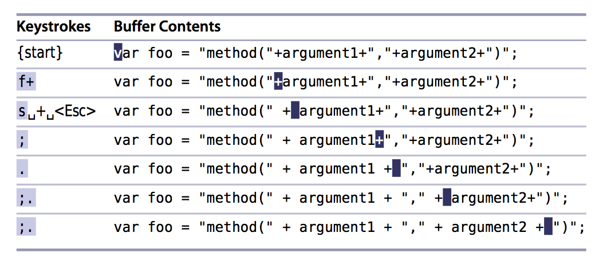

원문 Practical Vim - The Vim Way
Vim에서 문자의 앞뒤로 공백을 간단히 추가할 수 있습니다. 처음에는 이 방 법이 조금 이상해 보이지만, 반복할 수 있다는 장점이 있습니다. 우리는 다음의 작업을 어려움 없이 처리 할 수 있습니다.
아래와 같은 코드를 살펴봅시다.
var foo="method("+argument1+","+argument2+")";
약간 짜증나게 문자들이 연결되어 있습니다. 하지만 아래처럼 +기호 사이 각각에 공백을 추가하면 덜 짜증나게 될 것 같습니다.
var foo="method(" + argument1 + "," + argument2 + ")";
반복 가능한 변경 만들기
일반적인 접근방법으로 해보면 아래와 같습니다.

*s*명령은 커서 아래의 문자를 지우고 입력모드로 들어가는 두 가지 명령을 하나로 합친 명령입니다. *s*명령을 이용하여 +기호를 삭제하고 입력모드로 들어간 후, _+_를 입력하고 *<ESC>*를 눌러 입력모드에서 나옵니다.
일보 후퇴 삼보 전진. 멀쩡한 +를 지우고, 다시 입력하는 것이 조금은 엉뚱해 보이지만 점명령을 사용할 수 있도록 반복가능한 변경을 만드는 것이 중요하며, 이로 인해 효과적인 편집이 가능해집니다.
대진왈 : 이 예제에서는 수정전 문자와 수정후 문자가 동일한 +기호로 조금 혼란이 생기는데, 실제 많은 에디터에서 구현되어 있는 ‘교체하기(Replace)‘와 비슷한 동작을 한 것입니다. 그리고 선택된 영역 혹은 특정영역만 교체하는 기능이 있는 에디터의 기능과 더욱 유사하겠네요. sublime text에서는 멀티커서의 개념으로 조금 직관적으로 비주얼하게 처리 가능합니다. 따라서 vim의 장점이 딱히 느껴지지 않지만 여러분의 손은 평션키나 마우스는 누르지 않고 원래의 위치에 고대로 있다는 사실을 알려주고 싶네요.
반복 가능한 이동 만들기
이 예제에서는 또 다른 기법이 하나 더 있습니다. *f{문자}*명령은 f를 입력한 후에 하나의 문자가 입력되면 현재 커서의 위치 다음부터 해당 문자가 있는 곳으로 이동합니다( :h f 참조 ). 그래서 *f+*를 입력하면, 커서는 다음 위치의 +기호로 바로 이동합니다. *f{문자}*에 대한 명령은 팁49에서 더 자세히 설명합니다.
첫 수정하고, 우리는 *f+*를 반복하여 다음 위치로 점프할 수 있지만, 더 좋은 방법이 있습니다. *;명령*은 *f명령*으로 수행한 마지막 찾기를 반복합니다. 그래서 *f+*를 4번 입력하는 대신에 우리는 *f명령*을 한번 사용하고 *;명령*을 3번 사용할 수 있습니다.
이제 한꺼번에 해봅시다.
*;명령*은 다음 작업할 위치로 데려다 주며, *.명령*은 마지막 변경된 작업을 반복합니다. 그래서 ;. 3번 입력하면 됩니다. 잘 되시나요? 우리는 Vim의 모달입력 모델과 싸우지 말고, 그것과 함께 작업을 하면서, 특정작업을 어떻게 하면 더 쉽게 할 수 있는지 살펴봐야 합니다.
대진왈 : 공개된 pdf파일 하나를 이제야 끝냈네요. 사실 번역은 어느정도 되어있는데, jekyll에 맞게 마크다운 형식으로 변경하면서 문장을 다시 읽어보고 제가 이해한 것을 토대로 다시 작성해서 원문에 의미를 충분히 잘 전달하고 있는지는 저도 의심스럽습니다. ^^. 다음 공개된 부분은 팁64매크로 부분이네요. 매일 조금씩 꾸준히 할깨요 ^^/ 즐거운 주말 되세요.